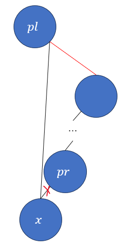

树堆
前言
如果你手撸过一棵红黑树，那你一定经历过噩梦般的时光，红黑树固然是很优秀的平衡搜索树结构，但是今天要讲的是另一种平衡搜索树的结构，它的名字叫树堆(Treap)，更正式的名称叫做笛卡尔树(Cartesian Tree)，之所以叫树堆是因为树堆同时拥有树和堆的性质(Tree+Heap=Treap)。
树堆的渐进性能和红黑树相同，但实际性能要略逊于红黑树，即使如此它也有红黑树所没有的优点，一方面是树堆比红黑树更容易实现，其次是树堆还支持快速的分离与合并操作。
本文假设你对二叉树和堆的一些基本概念都已经有所掌握，这里不会对一些基础概念作阐述。
树堆的概念
树堆的定义
树堆同时拥有树和堆的性质，它是一棵二叉搜索树的同时也是一个堆，树堆需要满足如下条件：
- 每个节点都由一个关键字和一个权值表示。
- 每个节点的权值需要大于等于或小于等于其父节点的权值。
可以用\((x,y)\)来表示一个节点，其中\(x\)表示关键字，\(y\)表示权值，因此树堆可以用二维笛卡尔坐标系来表示，如图1所示，这也是为什么树堆原名叫做笛卡尔树。
根据二叉搜索树的性质可以得知，以任何节点为局部根节点的子树都是二叉搜索树，而根据二叉堆的性质又可以得知，以任何节点为局部根节点的子树都是二叉堆，所以以任何节点为局部根节点的子树也都是树堆。
树堆的权值一般由一个良好的随机生成器生成，怎样的随机生成器算良好呢，随机数之间是相互独立的且为均匀分布，这样才能使树堆的高度期望为\(\textrm O(\log_2n)\)，因此树堆还有另一个名字叫做随机化二叉搜索树(Randomized Binary Search Tree)。
有趣的是，以最大堆为例(比如图1)，你将所有的节点按照权值从大到小排序，然后依次插入每个节点，会得到和树堆形状一模一样的二叉搜索树。
树堆对最大堆或最小堆没有要求，接下来本文将基于最大堆的前提来讲解树堆。
树堆的性能
树堆是一棵平衡搜索树，因此树堆的高度期望为\(\textrm O(\log_2n)\)，要证明这一点需要一些离散数学的知识，对算法分析没有兴趣的童鞋可以跳过这一部分。
首先要建立数学模型，假设现有某个增序序列\(S\)构成了树堆，任取\(S\)中的两个元素\(i,j\)，并且每个元素的权值都是均匀分布且相互独立的，如图2所示。
对于任意一个元素的深度由它的祖先节点的个数决定，那么先来定义一个伯努利随机变量\(A_{i,j}\)：
\[ A_{i,j}=\begin{cases} 1 & j\textrm{ is }i\textrm{'s ancestor}\\ 0 & \textrm{otherwise} \end{cases} \]
有了\(A_{i,j}\)后就可以使用它表示\(i\)的深度了：
\[ \textrm{Depth}(i)=\sum_{j=1,j\neq i}^nA_{i,j} \]
目标是求\(i\)的深度的期望，那么根据期望的线性性质有：
\[ E[\textrm{Depth}(i)]=E\left[\sum_{j=1,j\neq i}^nA_{i,j}\right]=\sum_{j=1,j\neq i}^nE[A_{i,j}] \]
现在的目标就是找出\(E[A_{i,j}]\)，在这之前先来分析一下\(i,j\)以及其他节点可能出现的权值，虽说可以分为四种情况，但其中一种不会影响\(i,j\)之间的父子关系。
- \(i\)拥有最大的权值，此时\(i\)是根节点，因此\(A_{i,j}=0\)。
- 某个在\(i,j\)之间的\(k\)拥有最大的权值，此时\(A_{i,j}=0\)，因为\(i,j\)一定在\(k\)的两侧，那么\(j\)自然不可能是\(i\)的祖先节点。
- \(j\)拥有最大的权值，此时\(j\)必然是\(i\)的祖先节点，因此\(A_{i,j}=1\)。
- 某个在\(i,j\)之外的\(k\)拥有最大的权值，此时\(i,j\)一定同时在\(k\)的左侧或右侧，此时\(A_{i,j}\)变成了一个子问题，而根据权值相互独立的假设，这个情况不会影响到\(A_{i,j}\)在其局部(前三种情况)的概率。
因此\(A_{i,j}\)可以归纳到\(i,j\)之间的子序列(包括\(i,j\))的范围下，而与\(i,j\)之外的元素无关，因此以这个子序列的范围来思考前三种情况即可。
由于前两种情况\(A_{i,j}=0\)，因此只需要计算第三种情况的概率，根据权值的均匀分布假设，\(j\)为最大权值的概率为\(\cfrac1{|j-i|+1}\)，从而得到\(E[A_{i,j}]=\cfrac1{|j-i|+1}\)。
那么接下来就都是代数了，推导过程如下：
\[ E[\textrm{Depth(i)}]=\sum_{j=1,j\neq i}^n\frac1{|j-i|+1}\\ =\sum_{j=1}^{i-1}\frac1{i-j+1}+\sum_{j=i+1}^n\frac1{j-i+1} \]
分别来看一下上述两个求和，很容易得出它们都是调和级数(Harmonic Series)的一部分，调和级数\(H_n\)的定义为：
\[ H_n=\sum_{i=1}^n\frac1n=1+\frac12+\frac13+\dots+\frac1n \]
而：
\[ \sum_{j=1}^{i-1}\frac1{i-j+1}=\frac1i+\frac1{i-1}+\dots+\frac12=H_i-1\\ \sum_{j=i+1}^n\frac1{j-i+1}=\frac12+\frac13+\dots+\frac1{n-i+1}=H_{n-i+1}-1 \]
调和级数不存在封闭形式，但是可以根据积分估算出它的上下限，调和级数的上下界：
\[ \ln n+\frac1n\leq H_n\leq\ln n+1 \]
这里只需要用到上界，那么回到推导：
\[ E[\textrm{Depth(i)}]=H_i+H_{n-i+1}-2\\ \leq\ln n+1+\ln(n-i+1)+1-2\\ <2\ln n<2\log_2n=\textrm O(\log_2n) \]
至此得证。
树堆的操作
树堆的查找和二叉搜索树的查找逻辑是一致的，这里就不赘述了，这里主要会讲解树堆的以下操作：
- \(\textrm{Insert}(x,y)\)：插入操作。
- \(\textrm{Remove}(x,y)\)：删除操作。
- \(\textrm{Split}(x)\)：将树堆按照某个关键字分离成两个树堆，左侧为开区间，右侧为闭区间。
- \(\textrm{Merge}(T_1,T_2)\)：将两个树堆合并成一个树堆，需要确保\(T_1,T_2\)都为树堆且\(T_1\)的最大值小于\(T_2\)的最小值(\(T_1\)中的所有元素均小于\(T_2\)中的所有元素)。
树堆的插入与删除
插入
先来看插入操作，其流程与二叉搜索树的插入流程基本是一致的，最终会找到一个叶子节点并根据元素大小放置在左孩子或右孩子处，由于权值是随机的，但是树堆需要满足二叉堆的性质，因此这里讲解一下插入后的修复工作。
树堆的插入修复是很简单的，只需要用到二叉树的旋转操作(如果对旋转操作不了解可以去看我的红黑树分享，里面有讲)，假设待修复节点为\(x\)，待修复节点的父节点为\(p\)，思路大致如下：
- 如果\(p=\textrm{NIL}\)或者\(\textrm{Priority}(x)\leq\textrm{Priority}(p)\)，则代表修复已经结束，但是需要注意树堆的根节点是否有发生变化。
- 如果\(x\)是左孩子，则对\(p\)进行右旋操作，并继续递归修复\(x\)。
- 如果\(x\)是右孩子，则对\(p\)进行左旋操作，并继续递归修复\(x\)。
虽然非常简单，不过这里还是描述一下\(2,3\)两种情况。
之后的图里面都会用\(x|k_x\)这样的结构来表示一个节点，其中\(x\)表示元素，\(k_x\)表示对应的权值。
情况二可以结合图3来看：
此时的已知条件为\(k_x>k_p,k_{xr}\leq k_p\)(修复前已经是一棵树堆)，对\(p\)进行右旋后，可以看出\(x,p\)以及\(p,xr\)之间仍然满足二叉堆的条件，因此这个修复是合理的。
情况三是类似的，结合图4来看：
此时的已知条件为\(k_x>k_p,k_{xl}\leq k_p\)，对\(p\)进行左旋后，可以看出\(x,p\)以及\(p,xl\)之间仍然满足二叉堆的条件，因此这个修复是合理的。
插入的修复就是这么简单，可以看出最坏情况则是一直修复到根节点，时间复杂度为\(\textrm O(\log_2n)\)，接下来讲删除。
删除
和插入比较类似，区别在于删除操作是向下修复，假设待修复节点为\(x\)，待修复节点的左孩子节点为\(l\)，右孩子节点为\(r\)，思路大致如下：
- 如果\(l=\textrm{NIL}\wedge r=\textrm{NIL}\)，修复结束，删除\(x\)即可。
- 如果\(l=\textrm{NIL}\)，将\(r\)置于\(x\)当前的位置并删除\(x\)，修复结束。
- 如果\(r=\textrm{NIL}\)，将\(l\)置于\(x\)当前的位置并删除\(x\)，修复结束。
- 如果\(\textrm{Priority}(l)\geq\textrm{Priority}(r)\)，则对\(x\)进行右旋操作，并继续递归修复\(x\)，这里的等号也可以置于条件5中。
- 如果\(\textrm{Priority}(l)<\textrm{Priority}(r)\)，则对\(x\)进行左旋操作，并继续递归修复\(x\)。
前三种情况都表示修复的终点，其中第二种情况和第三种情况都非常简单，其中一个孩子节点为空时，此时另外一个孩子节点必定满足二叉堆的性质，因此只需要将其替换\(x\)即可安全删除\(x\)。
情况四如图5所示：
此时的已知条件为\(k_l\geq k_r,k_l\geq k_{lr}\)，右旋\(x\)后仍然满足最大堆的性质。
情况五如图6所示：
此时的已知条件为\(k_r>k_l,k_r\geq k_{rl}\)，左旋\(x\)后仍然满足最大堆的性质。
删除的最坏情况则是删除节点为根节点，然后一直递归到叶子节点，时间复杂度为\(\textrm O(\log_2n)\)。
树堆的分离与合并
分离
这里的分离操作指是根据关键字将树堆分离成两个树堆\(T_1,T_2\)，\(T_1\)表示更小的部分且为开区间，\(T_2\)表示更大的部分且为闭区间。
分离大致如图7所示：
分离的思路是在查找关键字的过程中将遍历到的节点进行归纳，因为每个节点的关键字与目标关键字的比较结果会决定这个节点从属\(T_1\)还是\(T_2\)，而在归类的过程中可以顺便将其与合适的父节点进行相连，因此一次遍历就可以完成分离操作，因此其时间复杂度为\(\textrm O(\log_2n)\)。
假设目标关键字为\(k\)，\(x\)为查找过程中的当前节点，\(pl\)表示上一个归类到\(T_1\)的节点，\(pr\)表示上一个归类到\(T_2\)的节点，\(pl,pr\)初始为\(\textrm{NIL}\)，表示还没有找到可以归类的节点，这里的\(p\)指的是previous的缩写，分离的过程大致如下：
- 如果\(x=\textrm{NIL}\)，表示分离已经完成。
- 如果\(\textrm{key}(x)\geq k\)，表示\(x\)需要归类到\(T_2\)，此时还需要做一系列复杂操作，见下文。
- 如果\(\textrm{key}(x)<k\)，表示\(x\)需要归类到\(T_1\)，此时还需要做一系列复杂操作，见下文。
在具体分析之前，不妨思索一下整个搜索流程是怎样的，遍历节点时，如果该节点的关键字小于\(k\)，此时该节点会被归为\(T_1\)，并向右继续查找，因为此时左子树一定都在\(T_1\)中且不需要进行修改，同理如果该节点的关键字大于等于\(k\)，此时该节点会被归为\(T_2\)，并向左继续查找，因为此时右子树一定都在\(T_2\)中且不需要进行修改，那么\(pl,pr\)会满足怎样的规则呢？
先来看情况二，如果\(\textrm{key}(x)\geq k\)，此时来分析一下\(pr\)的情况：
\(pr=\textrm{NIL}\)，这说明\(x\)是第一个被归为\(T_2\)的节点，也就是\(x\)将成为\(T_2\)的根节点。
\(pr\neq\textrm{NIL}\)，这说明\(x\)在\(pr\)的左子树中(因为出现\(pr\)是向左查询)，此时\(x\)可能和\(pr\)相连(为其左孩子)，也可能不和\(pr\)相连，如图8所示：
如果是图8的左边情况，也就是相连的情况，那么只需要标记\(x\)为新的\(pr\)并继续向左查找即可，而如果是图8的右边情况，此时一定存在一个\(pl\)且它是\(x\)的父节点，这个时候就要将\(x\)与\(pl\)解绑并与\(pr\)相连，如图9所示：
将\(x\)作为\(pr\)的左孩子即可，但是这样就会有一个疑问，那就是图9中红色的线怎么办呢？那么就带着这个疑问来看情况三。
情况三，如果\(\textrm{key}(x)<k\)，此时来分析一下\(pl\)的情况：
\(pl=\textrm{NIL}\)，这说明\(x\)是第一个被归为\(T_1\)的节点，也就是\(x\)将成为\(T_1\)的根节点。
\(pl\neq\textrm{NIL}\)，这说明\(x\)在\(pl\)的右子树中(因为出现\(pl\)是向右查询)，此时\(x\)可能和\(pl\)相连(为其右孩子)，也可能不和\(pr\)相连，如图10所示：
如果是图10的左边情况，也就是相连的情况，那么只需要标记\(x\)为新的\(pl\)并继续向右查找即可，而如果是图10的右边情况，此时一定存在一个\(pr\)且它是\(x\)的父节点，这个时候就要将\(x\)与\(pr\)解绑并与\(pl\)相连，如图11所示：
 会发现，图11中标×的线正好就是图9中的红线，而图9中标×的线正好就是图11中的红线，所以实际上这两种情况的红线已经被提前处理掉了，不会造成冲突。
而这两种情况二的相连方式也并不会破坏最大堆和二叉搜索树的性质，因此这个递归过程是正确的，这样就可以快速得到两个树堆了。
合并
树堆的合并则要求参数\(T_1,T_2\)满足一定的要求，首先\(T_1,T_2\)本身都是树堆，并且要求\(T_1\)的最大值小于\(T_2\)的最小值(\(T_1\)中的所有元素均小于\(T_2\)中的所有元素)。
合并大致如图12所示：
合并的思路是将两棵树堆的根节点作为初始参数传入，根据它们的权值比较结果变更参数并继续递归下去，直到叶子节点为止，每次合并都返回其局部根节点。
假设\(x,y\)分别为\(T_1,T_2\)中当前合并的节点，初始条件为\(x=\textrm{Root}(T_1),y=\textrm{Root}(T_2)\)，那么合并的过程如下：
- 如果\(x=\textrm{NIL}\)，则直接返回\(y\)。
- 如果\(y=\textrm{NIL}\)，则直接返回\(x\)。
- 如果\(\textrm{Priority}(x)\geq\textrm{Priority}(y)\)，则将\(x\)的右孩子继续与\(y\)合并，并将其结果作为\(x\)新的右孩子，返回\(x\)。
- 如果\(\textrm{Priority}(x)<\textrm{Priority}(y)\)，则将\(y\)的左孩子继续与\(x\)合并，并将其结果作为\(y\)新的左孩子，返回\(y\)。
显然第一次合并的返回值就是合并后树堆的根节点。
前两种情况比较好理解，\(x,y\)其中一个为\(\textrm{NIL}\)节点则说明合并已到达尽头，而另外一个节点参数必然满足最大堆的性质，将其作为情况三四里面的孩子节点即可。
来看下情况三是怎样的，\(x\)的优先级高于\(y\)，那么\(x\)必须作为局部根节点，且由于\(\textrm{key}(y)>\textrm{key}(x)\)，因此\(y\)只能在\(x\)的右子树中，所以选择\(x\)的右孩子继续与\(y\)合并，如图13所示：
此时的已知条件为\(k_x\geq k_{xr},k_x\geq k_y\)，那么只需要继续递归处理\(k_{xr},k_y\)即可。
情况四也是一样，\(x\)的优先级低于\(y\)，那么\(y\)必须作为局部根节点，且\(\textrm{key}(y)>\textrm{key}(x)\)，因此\(x\)只能在\(y\)的左子树中，所以选择\(x\)继续与\(y\)的左孩子合并，如图14所示：
此时的已知条件为\(k_y\geq k_{yl},k_y>k_x\)，那么只需要继续递归处理\(k_x,k_{yl}\)即可。
只要两棵树堆的权重分布都是均匀的，那么合并操作的时间复杂度也为\(\textrm O(\log_2n)\)。
树堆的应用
因为树堆是平衡搜索树，因此可以将其作为动态集合使用，而且树堆的实现要比红黑树简单不少，且在\(n\)足够大时，它们的性能是逼近的，因此你完全可以不关注树堆的分离和合并操作来实现一棵简单的平衡搜索树，不过由于树堆理论上要求权值随机是相互独立且均匀的，然而实际的随机数生成器很难做到这点，因此树堆的实际性能会稍差一些，选择一个尽可能好的随机数生成器是要点。
有两个操作本文并未涉及但也是可以借助\(\textrm{Split}\)和\(\textrm{Merge}\)实现，它们分别是\(\textrm{Union}\)操作和\(\textrm{Intersect}\)操作，\(\textrm{Union}\)操作也是将两个树堆合并成一个，但是对两个树堆的大小关系没有要求，\(\textrm{Intersect}\)操作则是将两个树堆的交集作为新的树堆返回，这两种操作都能很好地支持去重，且时间复杂度均为\(\textrm O(m\log_2(n/m))\)，\(m,n\)分别表示两个树堆的元素数量且\(m<n\)(总是将少的那部分作用到多的那部分中)，读者有兴趣的话可以自行思考或查阅相关资料。
另外树堆由于其分离和合并的优秀性能，也有一些能使树堆大展身手的情景，下面列出几个。
- 并行计算，分离后的树堆是互不相关的，因此它们可以在各自的线程下进行工作，之后还可以通过\(\textrm{Merge}\)操作或\(\textrm{Union}\)操作将其还原成一棵树堆。
- 如果在树堆中同时还维护子树的节点数量的话，那么就可以支持许多索引的操作，而且还方便根据索引进行分离，这可以用于大篇幅的文本结构，可以选择一部分复制或粘贴到其他部分，而这只需要使用分离和合并可以快速实现。
总结
整体而言树堆的逻辑并不复杂，当然还是要注意一些操作中的细节，比如根节点的改变等等，这在任何树结构中都是需要注意的点，但是不管怎样，树堆都是相对容易实现的数据结构。
树堆也可以用于扩充数据结构的基底数据结构，毕竟树堆也是平衡搜索树的一种。
还是那句话，学习一个数据结构是容易的，从不同的数据结构中去领会它的精髓对解放自己的思路也是有着非凡意义的，望共勉。